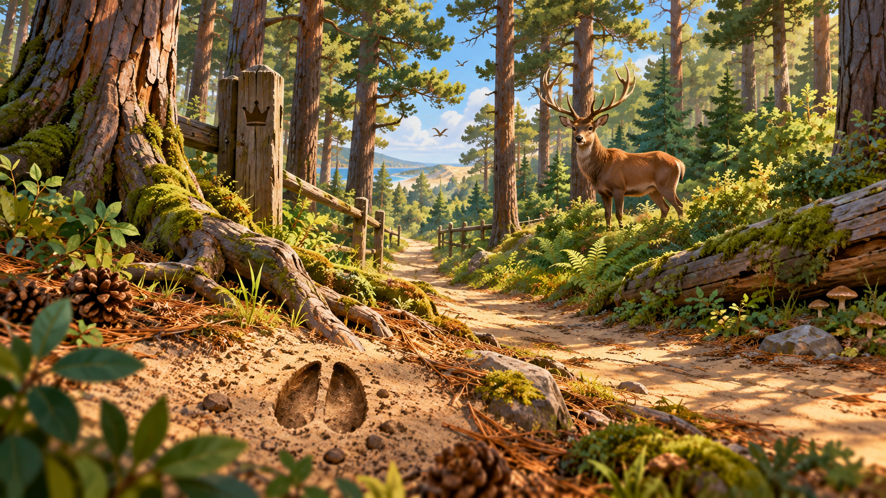
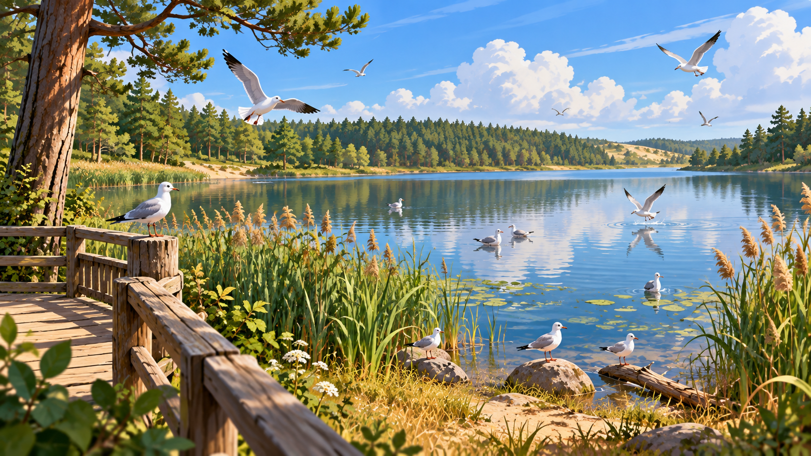
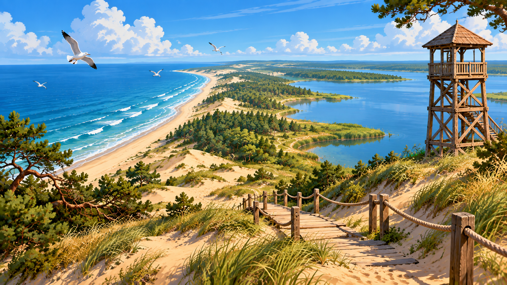
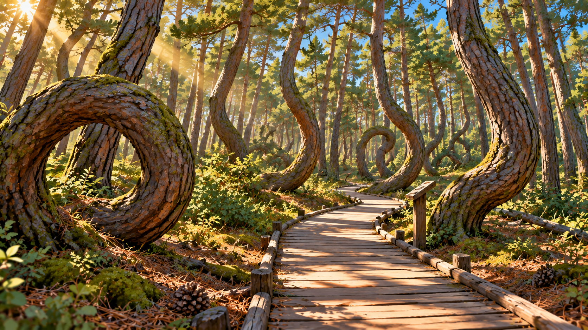
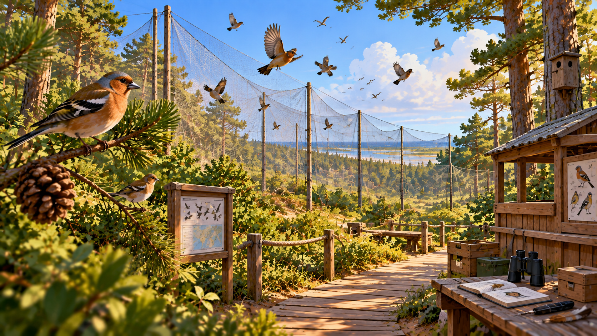
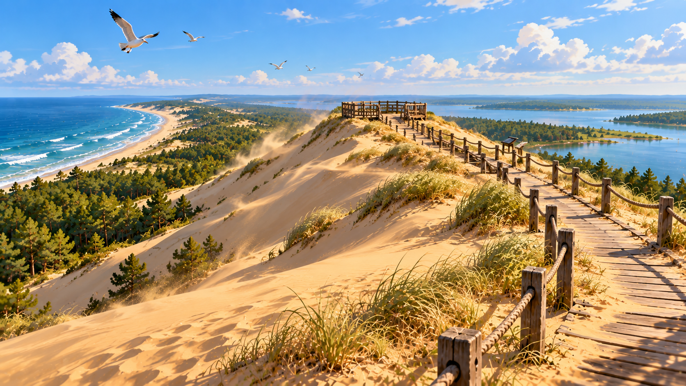

ОСТАНОВКА 01
Королевский бор
Древний лес и легенда о Неринге
Исторический рассказ
Легенда
Нажмите ▶, чтобы начать прослушивание. Запись можно остановить или перемотать в любой момент. Одновременно играет только одно аудио.

Древний лес и легенда о Неринге

Озеро среди лесов Куршской косы

Дюны, лес и история закрепления песков

Загадочные изгибы сосен

Птицы и путешествия через Куршскую косу

Панорамы дюн и поющие пески